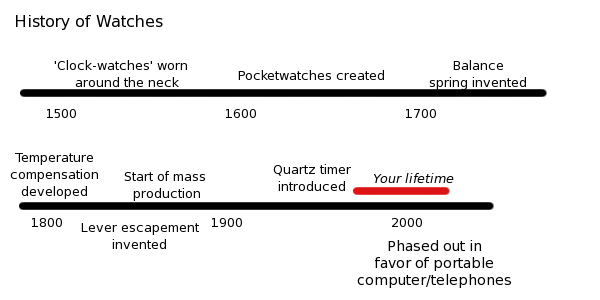

Comic JK 892
When I Feel Like It
⇤
<
?
>
⇥

⇤
<
?
>
⇥
Forum
.
RSS
.
Digg
.
Facebook
.
Reddit
.
Twitter
.
Stumbleupon
There's always the brief period in the 1990s where 'Clock-watches' made a return. Enter your thoughts on number 892 here. Please, no spamming, trolling, cussing, your mom jokes, or phasing out watches already. The easiest way to spot a moron is to ask them the time - if they pull out a 'phone despite wearing a watch, they're a moron. > Or they started wearing the watch yesterday. I wear mechanical watches... "sweeping" second hand is so much more badass than a cellphone... So, that "your lifetime" bar... Are you saying that we're all going to die? Is this some "mayan 2012" thing? > The rounded corners tell me that every reader of this comic was born within the same, say, 2-year period. Same for death. Now that's a niche market! >> small market, more probably > Cryonics FTW! *looks at his mechanical watch* :-P > Whippersnappers with their fancy electronic gizmos. *grumbles* You think this is bad, look at the graph for PAPER. > That's an interesting point, let me print it out... You missed 1988: "Huge clock-watches worn around the neck" >YEAH BOYEE! FYI phones still have quartz timers in them. >They are still mass produced, too! Watches aren't being "phased out" just because they're being integrated in watchphonecameragendacomputers: in 20 years they'll be the same size of a current watch, so we'll probably be wearing them around the wrist. Clorcke's third law: any sufficiently advanced computer is indistinguishable (at first glance) from a 1960's electric watch. > I donno.. with the advent of touch screens, high pixel density displays, and uses like gaming and reading books, it seems phones are getting bigger, not smaller. >>It will be interesting to see where sizes converge among watches, phones, tablets, desktops, televisions. >>>There's a funny thing there. You can bet that magazines, comics and MAYBE newspapers will still be around for a long long time. Internet took a huge chunk of their market, but printed media can still offer something that Internet can't. Television, on the other hand, cannot. So it's going away, rather soon I think. >>>>Television will disappear when the Baby Boomers are gone. Until then I'm afraid we are stuck with it. >>>>>Television, but not televisions. Or maybe televisions too? Maybe the line between televisions and desktops will blur the same way phones and tablets has. Missed Tock, the Watch-dog, from Phantom Tollbooth >+1!!! >>Let's not jump to Conclusions! >>>Beats the Doldrums What about the Swatch from the '80's? > I have one. >> Swatches are now almost as big as cars. Not quite, though. As far as non-cellphone-watches go, I prefer mechanical ones. The main reason is that my body kills the battery on quartz watches. If I get a month out of it, I'm doing fantastic! I once had a watch that started running slow, but it would run normal if I left it on the desk away from my body. > He's a freak! Run for your lives!!! >>She's a witch! BURN! >> Kill it with fire! I like the older style watches. They come in handy